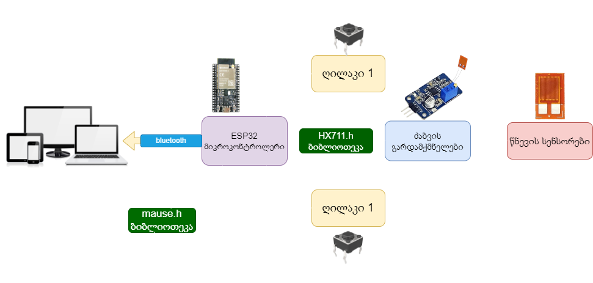

ნაწილები რომლებსაც გამოვიყენებთ
მთავარი მიკროკონტროლერი(ESP32) - რომლის მეშვეობითაც შესაძლებელი იქნება ჩვენი მოწყობილობა აღვწეროთ ისე როგორც მაუსი, ამისათვის ვიყენებთ mouse.h ბიბლიოთეკას. ასევე ამ მიკროკონტროლერით შესაძლებელი იქნება ბლუთუზით დაკავშირება სხვადასხვა მოწყობილობებთან რათა მომხმარებლის მხარეს არ ჰქონდეს პირდაპირი კონტაქტი ძლიერ ძაბვასთან
ძაბვის გარდამქმნელი BF350-3AA- მისი მეშვეობით შესაძლებელი იქნება წნევის სენსორებიდან გამომავალი ძაბვის გარდაქმნა/გაძლიერება, მიკროკონტროლერისთვის საჭირო დონეზე
3D პრინტერისთვის განკუთვნილი კაბელი - გამოვიყენებთ ძირითადი საყრდენი კონსტრუქციის დასამზადებლად
თხელი მოქნილი სადენი - რომლის მეშვეობითაც დავაკავშირებთ მთავარ საყრდენ კონსტრუქციაზე მოთავსებულ მოწყობილობებს პირის ღრუს მხარის კონსტრუქციაზე მოთავსებულ ელემენტებს
წნევის სენსორი BF350-3AA- მოთავსდება პირის ღრუს კონსტრუქციაზე, ის რეაგირებს მცირე ფიზიკურ დაწოლაზე, ასევე არის მცირე ზომის, რაც მის კომფორტულ გამოყენებას უზრუნველყოფს. აღნიშნული სენსორები დამზადებულია ტყვიის გარშე, რათა თავიდან ავიცილოთ მოწამვლის საშიშროება, თავად სენსორები კი სილიკონის რეზინით დაიფარება რადგან პირდაპირი კონტაქტი არ ჰქონდეს მომხმარებელთან
ტაქტილური სვიჩები - ისინიც დამაგრდება პირის ღრუს კონსტურქციაზე, მაუსის ღილაკების ანალოგებისთვის
ფორმაცვალებადი სილიკონის რეზინი - გამოვიყენებთ პირის ღრუს კონსტრუქციის შესაქმნელად, არ არის ტოქსიკური, არ აქვს გემო, და უსაფრთხოა ჯანმრთელობისთვის, კომფორტულად ჯდება პირის ღრუში, მაქსიმალური კომფორტისთვის
Sparkleiot ESP32-C3F - ბლუთუზ მოდული, რომლის საშუალებითაც შევძლებთ ენის მაუსის სხვადასხვა მოწყობილობებთან დაკავშირებას
ბლოკ დიაგრამა
მოცემულ ბლოკ დიაგრამაზე გამოსახულია თუ როგორ უკავშირდებიან მოწყობილობის შემადგენელი ნაწილები ერთმანეთს. მიკროკონტროლერი HX711.h ბიბლიოთეკით ახდენს ძაბვის გარდამქმნელებიდან გამომავალი სიგნალის დაფიქსირებას და mouse.h ბიბლიოთეკით ვაგენერირებთ მაუსის სისტემას